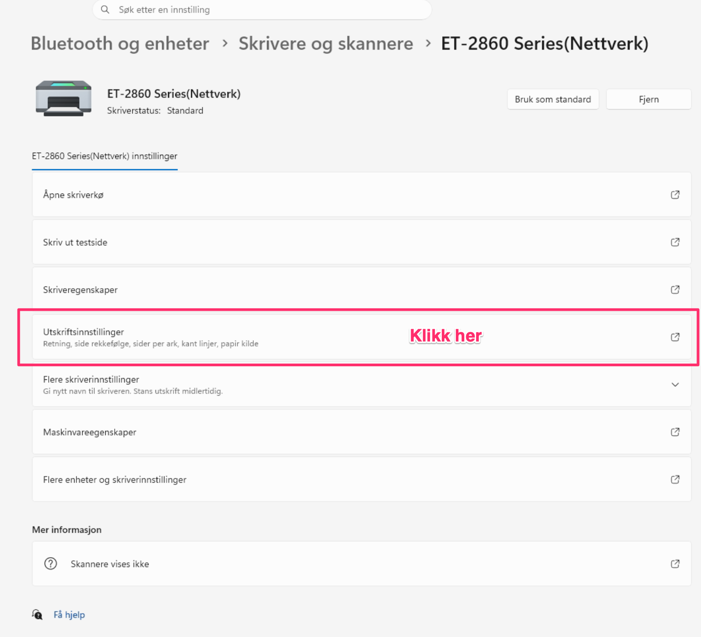
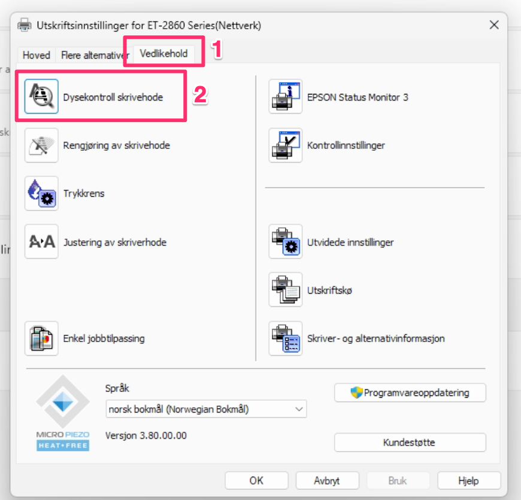
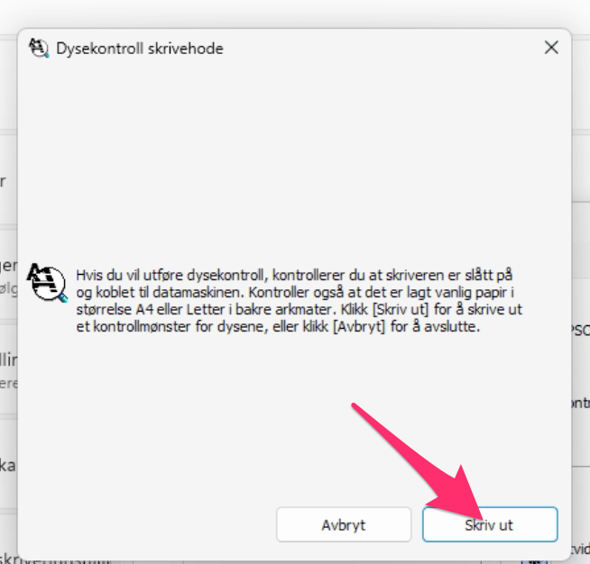
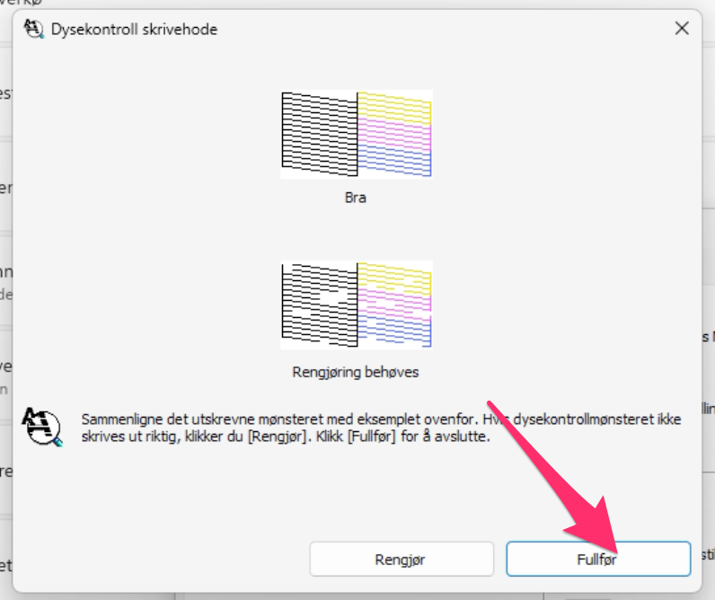
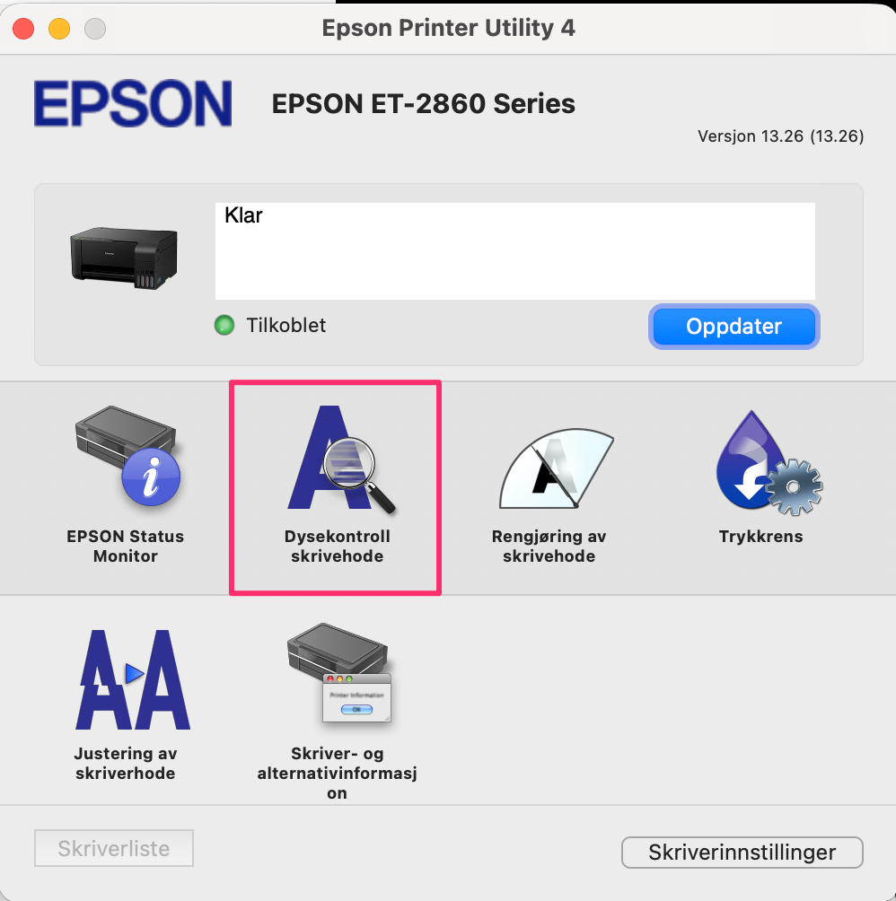
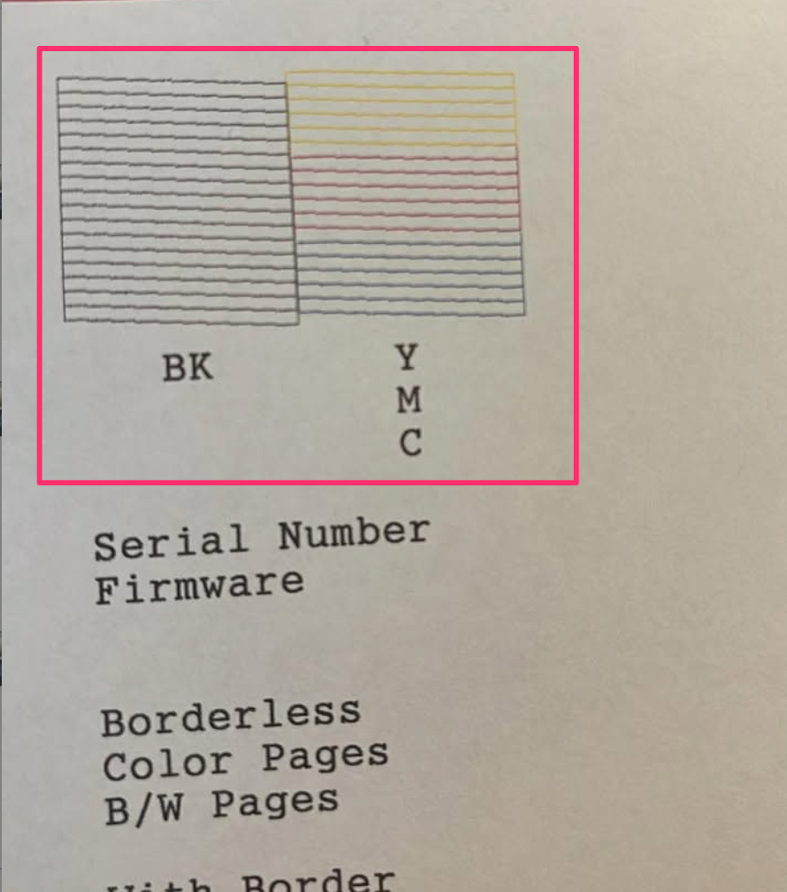
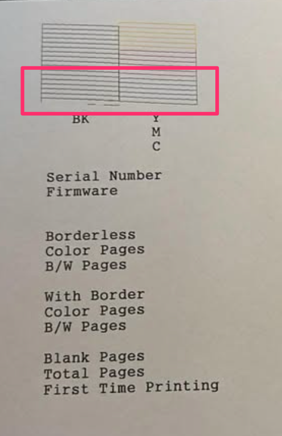

3. Dysesjekk – slik leser du den
Dysesjekken er det viktigste verktøyet du har for å oppdage problemer før de ødelegger en print. Den tar 30 sekunder og bruker minimalt med blekk. Detter sjekker "dagformen" på blekket, og du får en raskere oversikt over hvor problemet kan sitte, for å sette i gang nødvendige tiltak.
Slik printer du en dysesjekk
På Windows
- Åpne Innstillinger → Skrivere og skannere
- Høyreklikk på skriveren din → Utskriftsinnstillinger (eller Egenskaper)
- Gå til fanen Vedlikehold (eller Maintenance)
- Klikk Dysekontroll (eller Nozzle Check)
- Legg i et vanlig A4-ark og trykk Print




På Mac
- Åpne Epson Printer Utility
- Velg Nozzle Check
- Legg i et vanlig A4-ark og trykk Print
NB: Bruk vanlig kopipapir til dysesjekk og vedlikehold. Du trenger ikke bruke sublimeringspapir for dette.

Slik tolker du resultatet
Dysesjekken printer da et mønster med horisontale linjer i alle fire farger: sort (K), cyan (C), magenta (M) og gul (Y).

Alt er bra
Alle linjer er hele og sammenhengende. Ingen hull, ingen brudd, jevnt mønster i alle fire farger.
Neste steg:
- Kjør 3–5 eksemplarer av CMYK-CHART for å holde blekket i jevnlig bevegelse.
- Fortsett med planlagt printing når resultatet viser heltrukne linjer i alle farger.
Små brudd eller noen få manglende linjer
Dersom det er noen små eller mindre avvik i mønsteret
Eksempel:

Neste steg:
- Kjør én hoderengjøring Se hvordan her: 4. Hoderens og trykkrens – steg for steg
- Print en ny dysekontroll
- Ble det bedre nå? Bra. Du kan gå videre til printing av ut et par eksemplarer av dokumentet CMYK-CHART (cyan, magenta, gul og sort) for å holde blekket i jevnlig bevegelse, og dersom disse er komplette og fine, kan du fortsette videre til printingen du har planlagt.
- Fortsatt små brudd?
- Kjør én hoderengjøring til (maks 2 på samme dag)
- Kjør deretter ut en ny dysekontroll og analyser denne
- Ble det bedre nå? Bra. Du kan gå videre til printing av ut et par eksemplarer av dokumentet CMYK-CHART (cyan, magenta, gul og sort) for å holde blekket i jevnlig bevegelse, og dersom disse er komplette og fine, kan du fortsette videre til printingen du har planlagt.
- Fortsatt ikke bra etter 2 rens? Stopp.
- Vent til neste dag og ta en ny dysekontroll.
- Er det fortsatt avvik, gå videre til stegene for forklart i 4. Hoderens og trykkrens – steg for steg for å se om den trenger litt mer dypere rens.
Alvorlige avvik i dysesjekk eller en hel farge mangler
Dersom dysesjekken viser alvorlige avvik eller fullstendig mangler den ene fargen (f.eks. all cyan)
Neste steg:
- Sjekk blekknivået først. Tom tank kan gi samme symptom som tett dyse
- Hvis tanken har over 50 % full tank med blekk, kan du fortsette. Hvis ikke, må du fylle den oppå med blekk før du fortsetter:
- Kjør én hoderengjøring som forklart her: 4. Hoderens og trykkrens – steg for steg
- Kjør deretter ut en ny dysekontroll og analyser denne igjen
- Ikke bedre? Følg prosedyren for trykkrens som også står forklart her: 4. Hoderens og trykkrens – steg for steg
Striper eller fargefeil i printen, selv om dysesjekken ser ok ut
Hvis dysesjekken er fin, men du likevel får striper i den ferdige printen, kan de mest vanlige årsakene være for eksempel:
- Feil printinnstilling i skriverdriveren. Husk å sjekke at du bruker riktig fargeprofil og utskriftsprofil hver gang du skal printe. Dette sjekkes litt forskjellig enten du har Windows eller Mac. Er du usikker på hvordan, så ta kontakt med oss for å få råd.
- For lav bildekvalitet. Sjekk at originalbildet du skal bruke, har en stor nok bildeoppløsning. Denne bør være 300 DPI og over 1000 pixler i hver retning. Dersom du er usikker på dette, så ta kontakt med oss for å få en gjennomgang.
- Dersom du har sjekket begge disse, kan du ta kontakt med oss for at vi kan sjekke over instillingene dine.
Viktige huskeregler:
- Kjør alltid dysesjekk før du starter på kundeordre eller planlagte printjobber
- Kjør dysesjekk etter at skriveren har stått ubrukt i noen dager, og analyser resultatet for å vite hvilke tiltak som trengs
- Kjør dysesjekk etter hoderengjøring for å se om den virket
- Etter en trykkrens: Husk å vente med dysesjekk til neste dag. Epson sier 12 timer, men vår erfaring tilsier at vi får bedre reaultater ved å vente i ca 20-24 timer.
- Ta gjerne vare på dysesjekkene dine til problemet er løst. Det kan være nyttig å sammenligne dem over tid for å se om det er et mønster